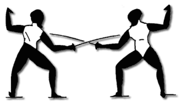

Película de terror 2: La secuela
 De: La Frikipedia, la enciclopedia extremadamente seria.
De: La Frikipedia, la enciclopedia extremadamente seria.
De la serie cine para todos:
Título igual al de la [[Película de terror primera parte]], sólo que con un "2" o un "II" al final, y un segundo título la mar de desagradable.
[[Imagen:|200px|center]]
| Director
|
El mismo de la primera parte (o su clon malvado, que lo ha matado...)
|
| Productor
|
Un tipo completamente diferente al de la primera parte, con ganas de joder la saga
|
| Actores
|
Misteriosamente, los mismos que los de la primera parte (aunque todos murieron en ella).
|
| País
|
El mismo, cómo no...
|
| Año
|
Existen tres opciones: Un día después, un año después, o una década después.
|
| Presupuesto
|
El doble de la primera.
|
| Secuelas
|
Película de terror 3: La secuela que cierra la trilogía innecesariamente
|
Las secuelas de las películas de terror, son famosas por tener un éxito que no se merecen, y producir luego, 5 secuelas más (ejemplo: Saw, Saw II, Saw III, Saw IV, Saw V, Saw VI, y las que le deparan...). En estas películas, por lo general, todos los personajes muertos en la primera no murieron realmente (sí, incluso áquel al que le hicieron comer una granada), sino que sólo estuvieron al borde de la muerte, y luego un médico increíble los salvó a todos (hasta al malo psicópata que solo merecía la muerte)...
Aunque parezca que es inocente, lo que come no son fideos, sino tus tripas...
Personajes

Aunque lo mataron en la primera parte, ha regresado, y más malvado que nunca.
En las secuelas de terror, los personajes principales suelen ser:
- La chica guapa superviviente de la catástrofe de la primera parte: Después de aquello, ha decidido reemprender una nueva vida, se ha casado y ahora tiene 2-3 hijos. Sigue siendo igual de tonta e igual de rubia.
- El psicópata que se salvó de la muerte, ahora más psicópata: Ha decidido usar técnicas más sofisticadas, como las armas medievales del siglo XIV...
- El ex-novio de la chica, que "casi" murió en la primera parte: En cuanto descubre que se ha casado en vez de esperarlo a que regresara de entre los muertos, decide hacerse compinche del malo. Al final de la película se vuelve bueno, y en un acto de heroicidad muere junto al malo.
- El marido de la chica: Es valiente, ágil, inteligente,... Pero el malo siempre consigue capturarlo (junto a sus hijos) y lo tiene de rehén. Al final de la película muere fijo.
- Todos los amigos de la primera parte (algunos ahora cojos, otros ciegos, otros mudos...) y más amigos de la segunda: Todos mueren. Y resucitarán en la tercera parte.
Momentos clave de la polémica película
 Una escena con una pelea de esgrima quedaría increíble. Pues no, para la próxima secuela (otra vez).

En esto consiste una de las pruebas del psicópata, en dejar que el tío feo este de meta una paliza.
- 1: La chica protagonista, ahora vive una situación de lujo. Hasta que redescubre a sus viejos amigos, que no murieron. Luego, al volver a casa, descubre que el loco asesino ha secuestrado a toda su família.
- 2: Cuando va a la nueva dirección del malo, la chica descubre en el jardín unos espantapájaros que son los cadáveres de sus amigos. Mientras empieza ha avanzar, los cádaveres la siguen. Ella no se da cuenta hasta que todos se tiran encima.
- 3: La chica se despierta y ve que está en la mansión del malo, donde la piensan torturar hasta la locura. Y deciden torturarla haciéndole pruebas de lo más jodidas, como por ejemplo...
- Duchar a tu hijo de 3 años, en una bañera con el agua a -3ºC. Vaya jodienda...
- Meterle un tiro a tu marido justo cuando a él se le empieza a deformar la cara.
- Buscar una cerilla de la marca "NO HAY PUBLICIDAD EN LA FRIKIPEDIA" en una caja de cerillas kilométrica antes de que se queme porque el malo tiene un lanzallamas...
- Y muchas más probablementes sacadas de Saw o de Hostal.
- 4: Después de haber superado las pruebas, el malo le pide al ex-novio que mate a la chica. Justo cuando este está a punto de hacerlo, le mete un tiro al psicópata.
- 5: El psicópata empieza a gritar de dolor y envía a su ejercito de zombies a matarlos, el chico empieza a matar zombies, mientras la chica solo mira (que ¡¡ca*****!!). Al final, los zombies acaban con el ex-novio, el cual, en su último aliento, le da un beso a la chica (será guarro).
- 6: Entonces, la chica se cabrea y empieza ha matar a todos los zombies. Justo cuando solo quedan el malo y ella (ella tiene una pistola con una bala, el malo, otra), el malo dice que se ha vuelto bueno y se mete un tiro. Justo después, la chica...
- Se mete un tiro también y se acaba la saga. Ya quisieras.
- Se va a casa, donde reemprende una nueva vida medio loca. Pero antes le mete otro tiro al malo.
- Ve que el chico se levanta, ¡Ha sobrevivido! Pero del susto, le mete un tiro y lo mata.
Si no te has enterado...
Mirate la primera parte (de la cual he copiado todo el artículo...), para enterarte mejor de que va este:
O bien mira la continuación de esta película en:
Autor(es):
- El Sevillano
- Yodela
- Alven94
- Generibot
- Sir Lancebot
Frikipedia 2005-2016, Licencia
GFDL 1.2 - Extraído por FrikiLeaks